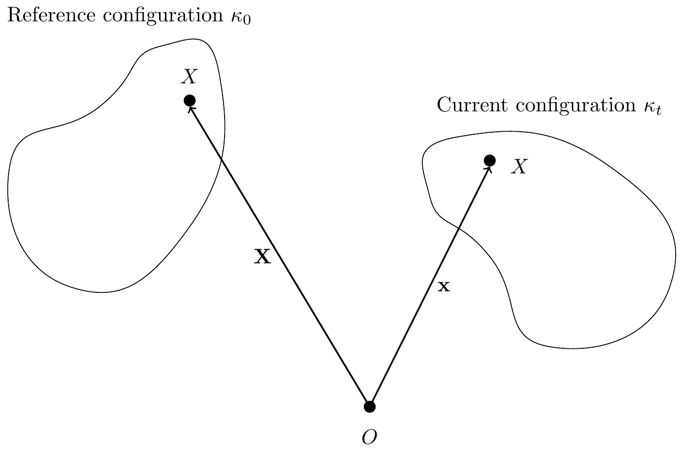
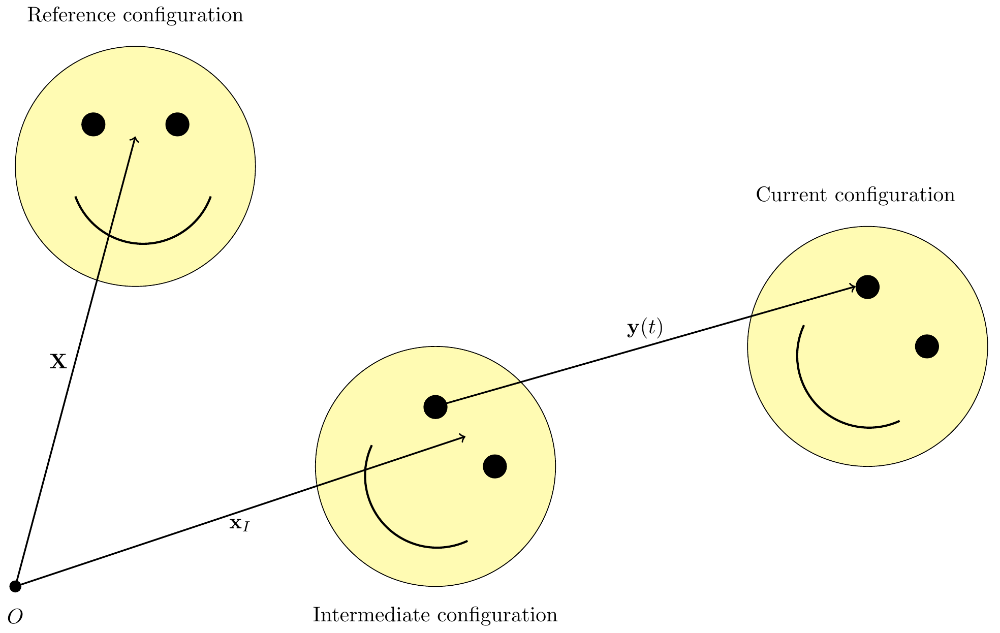
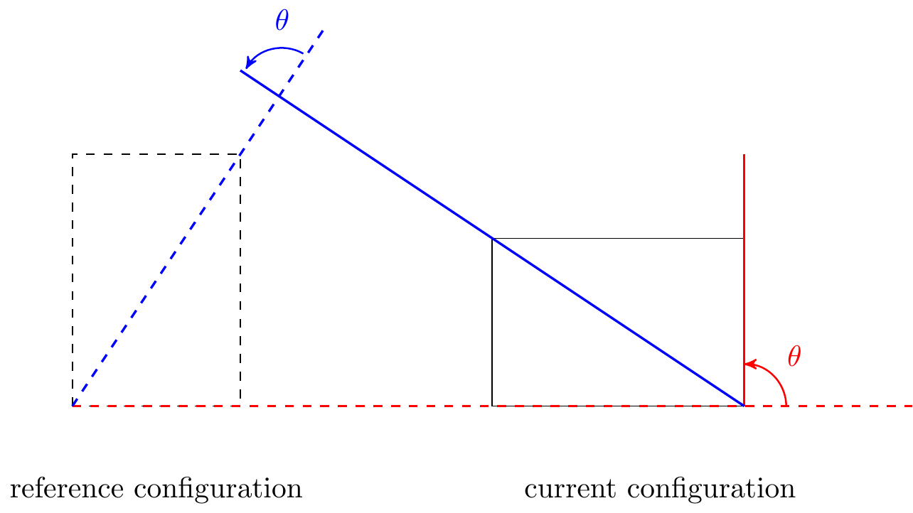
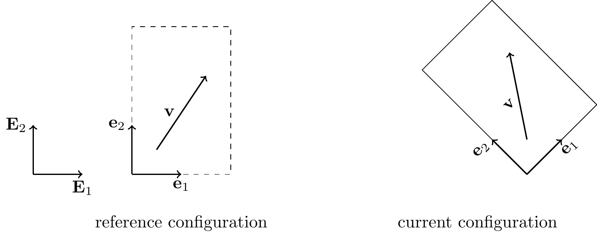
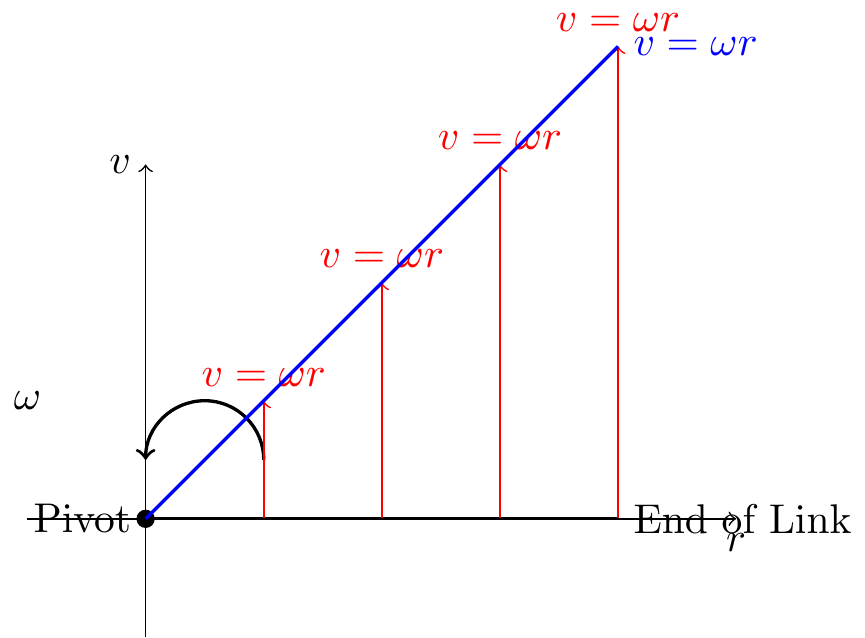
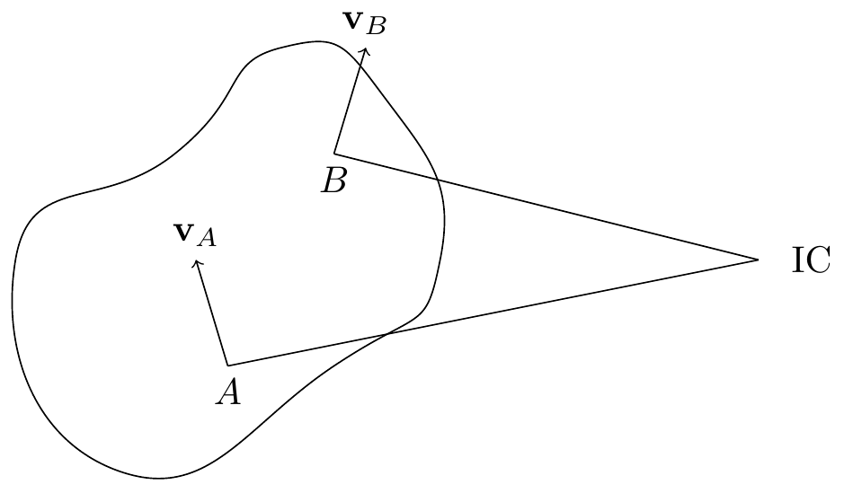
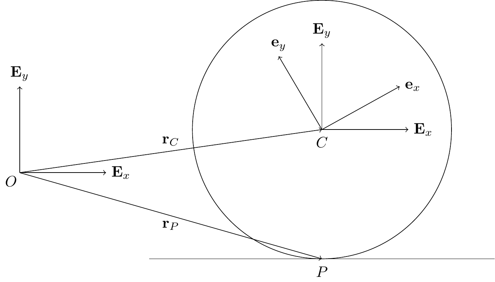
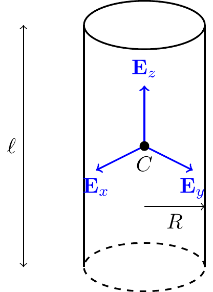

20 Kinematics of Rigid Bodies
In this chapter, we will denote the fixed basis by \(\{{\bf E}_1,{\bf E}_2,{\bf E}_3\}\).
Consider a body \(\mathcal{B}\) in motion in 3D space.
- A body \(\mathcal{B}\) is a collection of material points (mass particles or particles).
- It is convenient to define a fixed reference configuration \(\boldsymbol{\kappa}_0\) for the body: \({\bf X}=\boldsymbol{\kappa}_0\).
- The present (or current) configuration of the body is denoted by \(\boldsymbol{\kappa}_t\).
- We denote a material point by \(X\). The position of the material point \(X\) relative to a fixed origin at the reference configuration is denoted by \({\bf X}\) and at time \(t\) is denoted by \({\bf x}\).
- This motion is invertible; we can use \({\bf X}\) to uniquely define the motion as a function of \(X\) and \(t\): \({\bf x} = {\bchi}({\bf X},t)\).
- \(\bchi\) (pronounced like “kye”) is called the motion function. It tells you the current position vector of the material point which, at the reference configuration, had position vector \({\bf X}\).
TipThink!
Question: What is a mathematical statement that means that a body is rigid?
Answer: For rigid bodies the distance between any two mass particles \(X_1\) and \(X_2\) remains constant for all motions: \[\begin{align} \lnorm{\bf x}_1-{\bf x}_2\rnorm = \lnorm{\bf X}_1-{\bf X}_2\rnorm. \end{align}\] The motion preserves angles between lines on the body (unlike elastic bodies or fluids) and preserves orientation (it is not a reflection).
Any rigid body motion can be built in two steps:

- Rotate the object about \(O\) to the desired orientation: \({\bf x}_I = {\bf Q}(t){\bf X}\) with \(\lnorm{\bf Q}(t){\bf X}\rnorm = \lnorm{\bf X}\rnorm\).
- Translate via the translation vector \({\bf y}(t)\).
Then every rigid motion is: \[\begin{align} {\bf x} = \bchi({\bf X},t) = {\bf Q}(t){\bf X}+{\bf y}(t). \end{align}\]
\({\bf Q}(t)\) is a linear map and is called the rotation tensor. Both \({\bf Q}\) and \({\bf y}\) are the same for all material points (functions of \(t\) only). In this class we consider general plane motion, where \(\bomega = \dot{\theta}{\bf E}_3\) and \(\balpha = \dot{\bomega}\).
TipThink!
Question: How do we know if a body has rotated relative to a reference configuration?

Answer: We need the reference configuration to define rotation. The rotation angle \(\theta\) is the angular displacement of every material line from reference to current configuration. The axis of rotation is perpendicular to the page.
20.1 Corotational Bases
A corotational basis \(\{{\bf e}_1,{\bf e}_2\}\) is a pair of vectors embedded in the material. Initially \({\bf e}_i = {\bf E}_i\).

For a rigid body, the components of a material vector \({\bf v}\) along the corotational basis are constant throughout the motion: \[\begin{align} {\bf v} = a{\bf e}_1+b{\bf e}_2, \end{align}\] where \(a\) and \(b\) are constant and \({\bf e}_1(t)\), \({\bf e}_2(t)\) evolve with the body. The corotational basis is unaffected by translation.
20.2 Tensors
A tensor \({\bf T}\) is a linear transformation that transforms a vector into another vector: \({\bf T}{\bf u} = {\bf v}\). A tensor exists independent of any basis and is defined by its action on vectors.
Examples: a rotation tensor \({\bf Q}\), the identity tensor \({\bf I}\), a scaling tensor \({\bf S}\).
TipThink!
Question: Is a rotation a linear transformation?
Answer: Yes. Rotating \(a{\bf X}\) is the same as rotating \({\bf X}\) then scaling by \(a\), and rotating \({\bf X}_1+{\bf X}_2\) equals rotating each and adding. So rotations are linear transformations — hence tensors.
TipThink!
Question: Are vectors and matrices the same?
Answer: No. A vector is an abstract object independent of any basis; a matrix is its representation in a specific basis. Similarly, a tensor is not a matrix, but can be expressed as one in a given coordinate system.
20.3 Tensor (Bun) Product
The tensor product \({\bf a}\otimes{\bf b}\) acts on vectors by: \[\begin{align} \lp{\bf a}\otimes{\bf b}\rp{\bf u} = \lp{\bf b}\cdot{\bf u}\rp{\bf a}. \end{align}\] This is linear (verifiable directly), so it is a tensor.
TipThink!
Question: What does \(2{\bf E}_1\otimes{\bf E}_1+2{\bf E}_2\otimes{\bf E}_2+2{\bf E}_3\otimes{\bf E}_3\) do to a vector?
Answer: It scales it by a factor of two.
TipThink!
Question: Show that \({\bf E}_1\otimes{\bf E}_1+{\bf E}_2\otimes{\bf E}_2+{\bf E}_3\otimes{\bf E}_3\) is the identity tensor. Show also that the rotation tensor can be expressed as \({\bf Q} = {\bf e}_x\otimes{\bf E}_x+{\bf e}_y\otimes{\bf E}_y+{\bf e}_z\otimes{\bf E}_z\).
Answer: Apply the definition of the tensor product term by term.
20.4 Matrix Representation of Tensors
Given a basis \(\{{\bf e}_1,{\bf e}_2,{\bf e}_3\}\), define \(Q_{ij} \equiv \lp{\bf Q}{\bf e}_j\rp\cdot{\bf e}_i\). Then the action of \({\bf Q}\) in matrix form is: \[\begin{align} \begin{bmatrix}x_1\\x_2\\x_3\end{bmatrix} = \begin{bmatrix}Q_{11}&Q_{12}&Q_{13}\\Q_{21}&Q_{22}&Q_{23}\\Q_{31}&Q_{32}&Q_{33}\end{bmatrix} \begin{bmatrix}X_1\\X_2\\X_3\end{bmatrix}. \end{align}\] The matrix representation depends on the chosen basis, but the tensor itself is basis-independent.
20.4.1 Rigid Body Motion
In matrix form, rigid body motion is: \[\begin{align} \begin{bmatrix}x_1\\x_2\\x_3\end{bmatrix} = \begin{bmatrix}Q_{11}(t)&Q_{12}(t)&Q_{13}(t)\\Q_{21}(t)&Q_{22}(t)&Q_{23}(t)\\Q_{31}(t)&Q_{32}(t)&Q_{33}(t)\end{bmatrix} \begin{bmatrix}X_1\\X_2\\X_3\end{bmatrix} + \begin{bmatrix}y_1\\y_2\\y_3\end{bmatrix}. \end{align}\] For \([{\bf Q}(t)]\) to be a rotation matrix: \({\bf Q}{\bf Q}^T = {\bf I}\) and \(\det([{\bf Q}]) = 1\).
TipThink!
Question: Verify that the rotation about \({\bf E}_z\) by angle \(\theta(t)\) has matrix representation \[\begin{align*} \mathtt{Q} = \begin{bmatrix}\cos\theta & -\sin\theta & 0\\\sin\theta & \cos\theta & 0\\0 & 0 & 1\end{bmatrix} \end{align*}\] using \({\bf Q} = {\bf e}_1\otimes{\bf E}_1+{\bf e}_2\otimes{\bf E}_2+{\bf e}_3\otimes{\bf E}_3\) with \({\bf e}_1 = \cos\theta\,{\bf E}_1+\sin\theta\,{\bf E}_2\) and \({\bf e}_2 = -\sin\theta\,{\bf E}_1+\cos\theta\,{\bf E}_2\).
Answer: Compute \(Q_{ij} = \lp{\bf Q}{\bf E}_j\rp\cdot{\bf E}_i = {\bf e}_j\cdot{\bf E}_i\) to recover the matrix.
ImportantNote!
This matrix satisfies \(\mathtt{Q}\mathtt{Q}^T = \mathtt{I}\) and \(\det(\mathtt{Q})=1\), so \({\bf Q}\) is a proper orthogonal tensor. All proper orthogonal tensors are rotations and vice versa.
20.5 The Angular Velocity Vector
From rigid body motion, for any two material points \(A\) and \(B\): \(({\bf x}_B-{\bf x}_A) = {\bf Q}({\bf X}_B-{\bf X}_A)\). Differentiating: \[\begin{align} {\bf v}_B-{\bf v}_A = \dot{\bf Q}{\bf Q}^T({\bf x}_B-{\bf x}_A). \end{align}\] Since \({\bf Q}{\bf Q}^T = {\bf I}\), \(\dot{\bf Q}{\bf Q}^T\) is skew. Every skew tensor corresponds to a vector cross product, so: \[\begin{align} {\bf v}_B-{\bf v}_A = \bomega\times({\bf x}_B-{\bf x}_A). \end{align}\] The tensor \(\bOmega = \dot{\bf Q}{\bf Q}^T\) is the angular velocity tensor and \(\bomega\) is the angular velocity vector. Taking another derivative: \[\begin{align} {\bf a}_B-{\bf a}_A = \balpha\times({\bf x}_B-{\bf x}_A)+\bomega\times(\bomega\times({\bf x}_B-{\bf x}_A)) \end{align}\] where \(\balpha\) is the angular acceleration.
ImportantNote!
For any corotational basis vector \({\bf e}_i\) fixed to the rigid body: \[\begin{align} \dot{\bf e}_i = \bomega\times{\bf e}_i, \quad i=1,2,3. \end{align}\]
20.6 Velocity and Acceleration of Two Material Points
Let \(A\) and \(B\) be material points on the rigid body. Expressing \({\bf x}_{B/A}\) on a corotational basis (constant components): \[\begin{align} {\bf x}_{B/A} &= x{\bf e}_x+y{\bf e}_y,\\ {\bf v}_{B/A} &= x\dot{\bf e}_x+y\dot{\bf e}_y = \bomega\times{\bf x}_{B/A},\\ {\bf a}_{B/A} &= \balpha\times{\bf x}_{B/A}+\bomega\times(\bomega\times{\bf x}_{B/A}). \end{align}\] With \(\bomega = \omega{\bf E}_z\) and \(\balpha = \alpha{\bf E}_z\): \[\begin{align} \omega\,d\omega = \alpha\,d\theta, \qquad \omega\,dt = d\theta, \qquad \alpha\,dt = d\omega. \end{align}\]
20.7 Particle in a Noninertial Frame
A noninertial frame is one that accelerates (e.g. an accelerating bus, a merry-go-round). If \(A\) is fixed to the rigid body and \(B\) moves relative to it: \[\begin{align} {\bf v}_B-{\bf v}_A &= \bomega\times({\bf x}_B-{\bf x}_A)+\overset{\circ}{\bf x}_{B/A},\\ {\bf a}_B-{\bf a}_A &= \balpha\times({\bf x}_B-{\bf x}_A)+\bomega\times\lp\bomega\times\lp{\bf x}_B-{\bf x}_A\rp\rp+2\bomega\times\overset{\circ}{\bf x}_{B/A}+\overset{\circ\circ}{\bf x}_{B/A}, \end{align}\] where \(\overset{\circ}{\bf x}_{B/A} = \dot{x}{\bf e}_x+\dot{y}{\bf e}_y\) and \(\overset{\circ\circ}{\bf x}_{B/A} = \ddot{x}{\bf e}_x+\ddot{y}{\bf e}_y\) are the first and second corotational rates. The term \(2\bomega\times\overset{\circ}{\bf x}_{B/A}\) is the Coriolis acceleration and \(\bomega\times(\bomega\times{\bf x}_{B/A})\) is the centripetal acceleration.
TipThink!
Question: See this video of people playing catch on a merry-go-round. A ball is thrown on a merry-go-round rotating about fixed center \(O\), with \({\bf r}_0 = -R{\bf E}_x\) and \({\bf v}_0 = v_0{\bf E}_x\). What velocity does the ball appear to have to an observer on the merry-go-round?
Answer: The ball is a projectile: \({\bf a} = -g{\bf E}_z\), \({\bf v} = -gt{\bf E}_z+{\bf v}_0\). From \({\bf v} = \bomega\times({\bf r}-{\bf r}_0)+\overset{\circ}{\bf x}_{P/O}\): \[\begin{align} \overset{\circ}{\bf x}_{P/O} = -gt{\bf E}_z+v_0{\bf E}_x+\omega(v_0 t-R){\bf E}_y. \end{align}\]
20.8 Classifications of Rigid Body Motions
Pure (rectilinear) translation: \(\bomega = {\bf 0}\), \(\balpha = {\bf 0}\).
Curvilinear translation: material points follow parallel curved paths; \(\bomega = {\bf 0}\), \(\balpha = {\bf 0}\) (e.g. Ferris wheel bucket).
Fixed point rotation: \(\bomega \neq {\bf 0}\), fixed point with \({\bf v}_O = {\bf a}_O = {\bf 0}\) (e.g. pendulum): \[\begin{align} {\bf a}_P = \balpha\times{\bf r}_P+\bomega\times(\bomega\times{\bf r}_P). \end{align}\] The term \(\balpha\times{\bf r}_P\) is the tangential acceleration; \(\bomega\times(\bomega\times{\bf r}_P)\) is the centripetal acceleration.
General motion: combined translation and rotation.
20.9 Instantaneous Center of Rotation
TipThink!
Question: Draw the velocity profile of a rotating link with a fixed end.
Answer:

A body in general plane motion is not rotating about a fixed point, but instantaneously it rotates about the instantaneous center of rotation (IC) — a point with zero velocity at that instant. If \({\bf v}_{IC} = {\bf 0}\), then for any material point \(A\): \[\begin{align} {\bf v}_A = \bomega\times({\bf r}_A-{\bf r}_{IC}). \end{align}\] So \({\bf r}_{A/IC}\) is perpendicular to \({\bf v}_A\). Knowing the directions of \({\bf v}_A\) and \({\bf v}_B\) for two material points identifies the IC.

For the IC: \[\begin{align} {\bf v}_P = \bomega\times{\bf r}_{P/IC}, \qquad {\bf a}_P = \balpha\times{\bf r}_{P/IC}+\bomega\times(\bomega\times{\bf r}_{P/IC}). \end{align}\]
Remarks: the IC generally migrates through space; for a translating rigid body the IC is at infinity; the IC can only be used for velocity analysis since its acceleration is nonzero.
Procedure: use geometry to find the IC; find \(|\omega|\) via \({\bf v}_P = \bomega\times{\bf r}_{P/IC}\); obtain \({\bf v}_P\) for any point.
Examples: Crank slider, rod falling on a corner.
20.10 Doing Kinematics Geometrically
In some problems, geometric laws that hold for all time can be differentiated: - The law of sines holds at all times. - The law of cosines holds at all times. - Angle sum relations for a triangle (e.g. \(\beta+\alpha+\theta=\pi\)) can be differentiated.
20.11 Kinematics of Rolling and Sliding
ImportantNote!
Terminology: “rolling” = roll without slip; “sliding” = roll with slip.
Consider a rigid body \(\mathcal{B}\) in contact with a fixed surface \(\mathcal{S}\). Let \(P\) be the material point of \(\mathcal{B}\) in contact at time \(t\), with unit normal \({\bf n}\) to \(\mathcal{S}\).
Since \(P\) belongs to \(\mathcal{B}\): \[\begin{align} {\bf v}_P-{\bf v}_C &= \bomega\times({\bf r}_P-{\bf r}_C),\\ {\bf a}_P-{\bf a}_C &= \balpha\times({\bf r}_P-{\bf r}_C)+\bomega\times\lp\bomega\times({\bf r}_P-{\bf r}_C)\rp. \end{align}\]
- Contact (touching): \({\bf v}_P\cdot{\bf n} = 0\).
- Rolling (no slip): \({\bf v}_P = {\bf 0}\), so \({\bf v}_C = -\bomega\times({\bf r}_P-{\bf r}_C)\). Note: \({\bf a}_P \neq {\bf 0}\) in general.
20.11.1 Example: Rolling Circular Disk
TipThink!
Question: What is the IC of a rolling disk?
Answer: The contact point with the surface.

A disk of radius \(R\) rolling on a plane with \(\bomega = \omega{\bf E}_z\). Since \({\bf v}_P = {\bf 0}\): \[\begin{align} {\bf v}_C = \bomega\times R{\bf E}_y = -\omega R{\bf E}_x \implies \dot{x} = -\omega R, \quad \ddot{x} = -\alpha R. \end{align}\] The acceleration of the contact point: \[\begin{align} {\bf a}_P = -\omega^2 R{\bf E}_y \end{align}\] (purely vertical — toward the center).
20.12 Center of Mass
The center of mass \(C\) of \(\mathcal{B}\) has position vector \[\begin{align} {\bf r}_C = \frac{\int_{\mathcal{B}}{\bf r}\,dm}{\int_{\mathcal{B}}dm}, \qquad dm = \rho(x,t)\,dv. \end{align}\] For rigid bodies, \(C\) behaves as a material point: \[\begin{align} {\bf v}_C-{\bf v}_A = \bomega\times({\bf r}_C-{\bf r}_A), \qquad {\bf a}_C-{\bf a}_A = \balpha\times({\bf r}_C-{\bf r}_A)+\bomega\times\lp\bomega\times({\bf r}_C-{\bf r}_A)\rp. \end{align}\]
20.13 Linear Momentum
\[\begin{align} {\bf G} = \int_{\mathcal{B}}{\bf v}\,dm = m{\bf v}_C. \end{align}\]
20.14 Angular Momenta
The angular momentum about a point \(P\) is \[\begin{align} {\bf H}^P = \int_{\mathcal{B}}({\bf r}-{\bf r}_P)\times{\bf v}\,dm, \end{align}\] and the relationship between angular momenta about \(O\) and \(C\) is \[\begin{align} {\bf H}^O = {\bf H}^C+{\bf r}_C\times{\bf G}. \end{align}\]
20.14.1 Inertia Tensor
With \(\bpi = {\bf r}-{\bf r}_C\) and using the BAC-CAB identity: \[\begin{align} {\bf H}^C = \int_{\mathcal{B}}\lp(\bpi\cdot\bpi)\bomega-(\bpi\cdot\bomega)\bpi\rp dm = {\bf I}^C\bomega. \end{align}\] The inertia matrix on the corotational basis: \[\begin{align} [{\bf I}^C] = \begin{bmatrix} I^C_{xx} & I^C_{xy} & I^C_{xz}\\ I^C_{xy} & I^C_{yy} & I^C_{yz}\\ I^C_{xz} & I^C_{yz} & I^C_{zz} \end{bmatrix}, \end{align}\] with diagonal entries (moments of inertia) and off-diagonal entries (products of inertia): \[\begin{align} I^C_{xx} &= \int_{\mathcal{B}}(y^2+z^2)\,dm, \qquad I^C_{yy} = \int_{\mathcal{B}}(x^2+z^2)\,dm, \qquad I^C_{zz} = \int_{\mathcal{B}}(x^2+y^2)\,dm,\\ I^C_{xy} &= -\int_{\mathcal{B}}xy\,dm, \qquad I^C_{xz} = -\int_{\mathcal{B}}xz\,dm, \qquad I^C_{yz} = -\int_{\mathcal{B}}yz\,dm. \end{align}\] When \(\{{\bf e}_x,{\bf e}_y,{\bf e}_z\}\) is an eigenbasis of \([{\bf I}^C]\), the products of inertia vanish.
TipThink!
Question: Is my moment of inertia about an axis through my body greater when my arms are closed or open?
Answer: Greater when arms are open — mass is farther from the axis. See also: Professor Walter Lewin rolling cylinders.
20.14.2 Example: Solid Cylinder

With \(dm = \rho\,r\,dr\,d\theta\,dz\): \[\begin{align} I^C_{zz} = \rho\int_{-\ell/2}^{\ell/2}\int_0^{2\pi}\int_0^R r^3\,dr\,d\theta\,dz = \frac{1}{2}\rho\pi\ell R^4 = \frac{mR^2}{2}. \end{align}\]
20.14.3 Example: Cylindrical Hoop
Every \(dm\) has \(r = R\), so: \[\begin{align} I^C_{zz} = R^2\int_{\mathcal{B}}dm = mR^2. \end{align}\]
20.15 Parallel Axis Theorem
Given inertia components about \(C\), the inertia about a material point \(A\) with \({\bf r}_A - {\bf r}_C = A_x{\bf e}_x+A_y{\bf e}_y+A_z{\bf e}_z\) (axes parallel at \(A\) and \(C\)): \[\begin{align} I^A_{xx} &= I^C_{xx}+m(A_y^2+A_z^2),\\ I^A_{xy} &= I^C_{xy}-mA_xA_y. \end{align}\] In tensor form: \[\begin{align} {\bf I}^A = {\bf I}^C+m\lnorm{\bf r}_A-{\bf r}_C\rnorm^2{\bf I}-m({\bf r}_A-{\bf r}_C)\otimes({\bf r}_A-{\bf r}_C). \end{align}\]
ImportantNote!
The parallel axis theorem applies only between the center of mass \(C\) and another material point — not between any two arbitrary material points. The moment of inertia always increases when moving away from \(C\).
20.16 Radius of Gyration
The radius of gyration \(k_z\) about the \(z\)-axis satisfies \(mk_z^2 = I_{zz}\).
20.17 Angular Momentum About a Moving Point \(P\)
For a material point \(P\) on the rigid body: \[\begin{align} {\bf H}^P &= {\bf I}^P\bomega+({\bf r}_C-{\bf r}_P)\times m{\bf v}_P, \end{align}\] with special cases \({\bf H}^C = {\bf I}^C\bomega\) and \({\bf H}^O = {\bf I}^O\bomega\) (fixed \(O\)). In general: \[\begin{align} \dot{\bf H}^P = {\bf I}^P\overset{\circ}{\bomega}+\bomega\times({\bf I}^P\bomega)+\frac{d}{dt}\leb({\bf r}_C-{\bf r}_P)\times m{\bf v}_P\reb. \end{align}\]